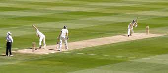
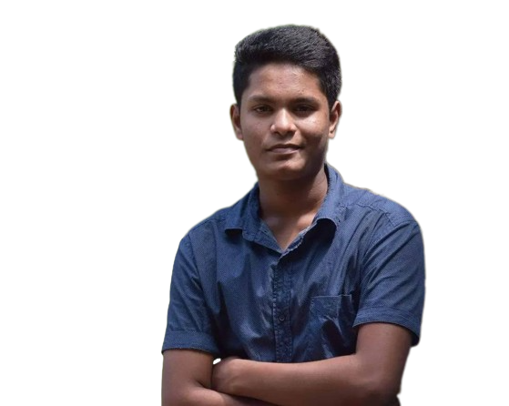
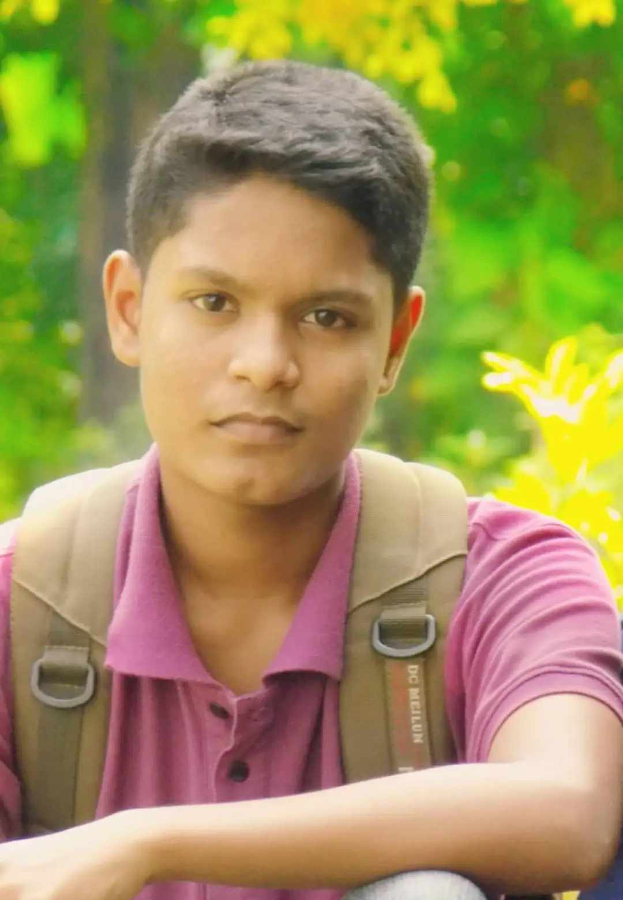
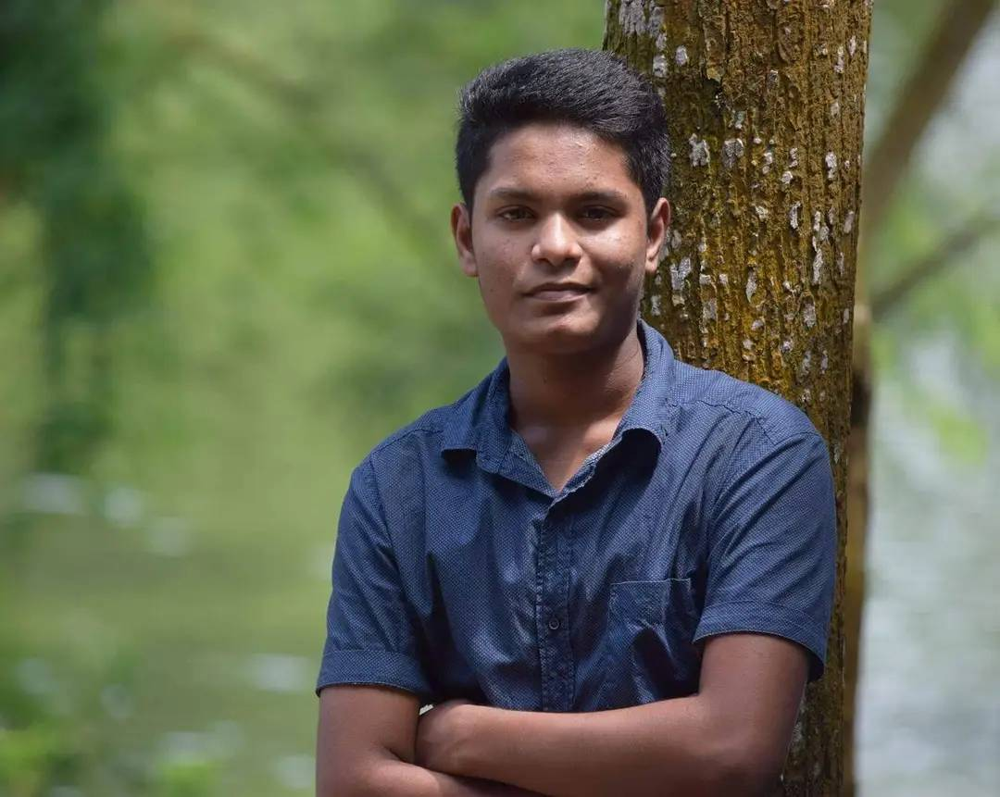
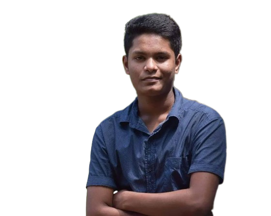
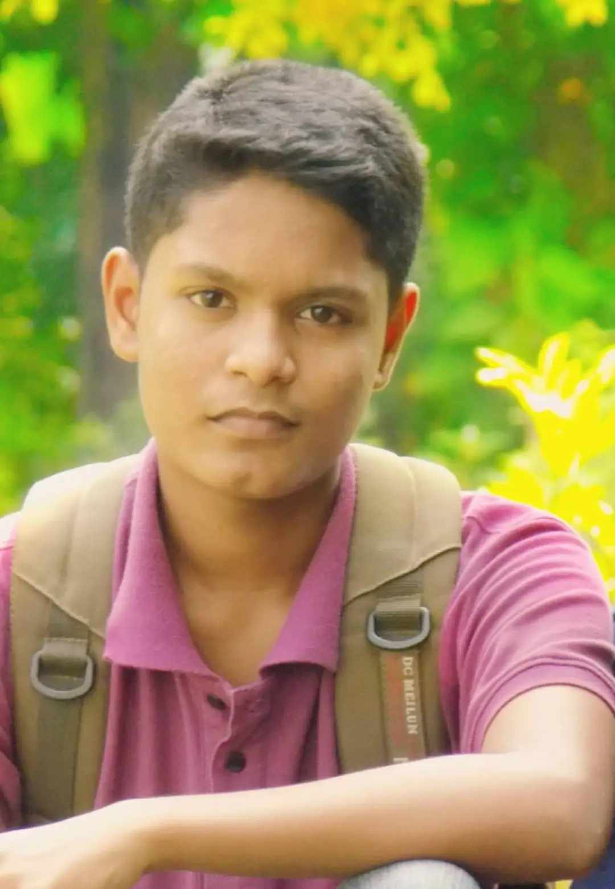
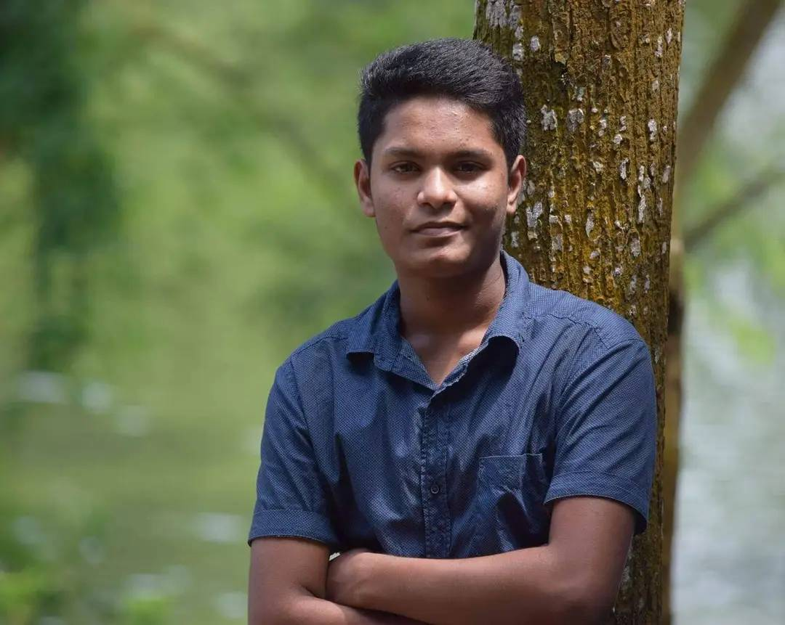

MD.SAIDUR RAHMAN
Chemistry Student ! Cricket Enthusiast ! Photographer
Chemistry Student ! Cricket Enthusiast ! Photographer
-Hello, I'm Md. Saidur Rahman Siam, a passionate
chemistry student with an insatiable curiosity for the mysteries
of the molecular world. Science has always been my compass,
guiding me through the intricate paths of the periodic table and
the boundless possibilities it holds. I believe that chemistry is
not just a subject; it's the art of unraveling the secrets of our.
Beyond the laboratory and the classroom, I have another love that
keeps my heart racing: cricket. The sound of a leather ball
hitting the willow, the camaraderie of the team, and the sheer
thrill of competition inspire me just as much as chemistry. I've
learned that the strategies of cricket and the precision of
science have more in common than one might think. Both require
dedication, teamwork, and a keen eye for detail.
When I'm not immersed in beakers and test tubes or on the cricket
field, you'll often find me with a camera in hand, capturing the
beauty of the world through the lens. Photography is my creative
outlet, allowing me to freeze moments in time and share the
stories that unfold around us every day. Whether it's a
breathtaking landscape or the subtle expressions of people,
photography helps me see the world from a different
perspective.This portfolio is a glimpse into my world—a fusion of
science, sports, and art. It's a reflection of the diverse
interests and passions that define me.
I hope you enjoy exploring the chemistry of my experiences, the
cricketing spirit that drives me, and the art of photography that
allows me to communicate without words.Md. Saidur Rahman Siam, a
passionate chemistry student with an insatiable curiosity for the
mysteries of the molecular world. Science has always been my
compass, guiding me through the intricate paths of the periodic
table and the boundless possibilities it holds. I believe that
chemistry is not just a subject; it's the art of unraveling the
secrets of our universe.
Beyond the laboratory and the classroom, I have another love that
keeps my heart racing: cricket. The sound of a leather ball
hitting the willow, the camaraderie of the team, and the sheer
thrill of competition inspire me just as much as chemistry. I've
learned that the strategies of cricket and the precision of
science have more in common than one might think. Both require
dedication, teamwork, and a keen eye for detail.
When I'm not immersed in beakers and test tubes or on the cricket
field, you'll often find me with a camera in hand, capturing the
beauty of the world through the lens. Photography is my creative
outlet, allowing me to freeze moments in time and share the
stories that unfold around us every day. Whether it's a
breathtaking landscape or the subtle expressions of people,
photography helps me see the world from a different perspective.
This portfolio is a glimpse into my world—a fusion of science,
sports, and art. It's a reflection of the diverse interests and
passions that define me. I hope you enjoy exploring the chemistry
of my experiences, the cricketing spirit that drives me, and the
art of photography that allows me to communicate without words.
I have another love that keeps my heart racing: cricket. The sound of a leather ball hitting the willow, the camaraderie of the team, and the sheer thrill of competition inspire me just as much as chemistry. I've learned that the strategies of cricket and the precision of science have more in common than one might think. Both require dedication, teamwork, and a keen eye for detail.
You'll often find me with a camera in hand, capturing the beauty of the world through the lens. Photography is my creative outlet, allowing me to freeze moments in time and share the stories that unfold around us every day. Whether it's a breathtaking landscape or the subtle expressions of people, photography helps me see the world from a different perspective
 




